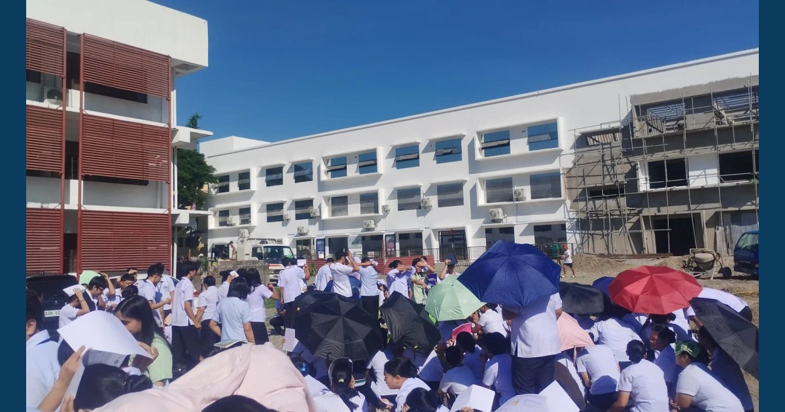

MCNP–ISAP Strengthens Disaster Preparedness Through Earthquake Drill and Emergency Preparedness Exercise

MCNP and ISAP conducted the Earthquake Drill and Emergency Preparedness Exercise on November 05, 2026, strengthening disaster preparedness, safety awareness, and emergency response readiness among students, faculty, and personnel.
Read full article